Tic-Tac-Toe Bot
I worked as part of a team to program a robot arm to play Tic Tac Toe against a person.
Hi! I'm a final year Mechanical and Mechatronics Engineering student at the University of Technology Sydney. I have a particular interest in robotics, and am currently working on the control system for an exoskeleton arm in my university capstone project.
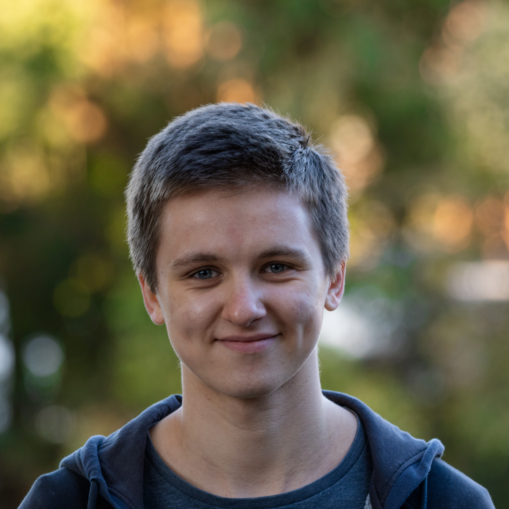
I'm a Sydney based engineering student with experience in robotics, automation, and research, having recently worked on a research project involving communication between underwater robots in collaboration with Thales.
My interest in robotics combines my enjoyment in learning how things work, and my fascination with problem solving. When I’m presented with a complex problem, I find it satisfying to break the problem down into pieces, solve them individually, and combine them together into a complete project.
Short term, my goals are to strengthen my knowledge of robotic control by finishing my capstone project, and graduate university maintaining my high distinction average. My medium term career goal is to work in a varied robotics role, gaining experience solving a diverse range of problems and continually expanding my skillset. At this point, I also aim to gain Chartered engineer status through Engineers Australia to expand my career opportunities. Long term, I would like to utilise this experience to specialise, gaining a deeper knowledge and furthering development in my field.
In my engineering degree, I’ve had the opportunity to work on several mechatronics projects. This academic work has led me to achieving a high distinction average with a 6.55/7.00 GPA, and being included in the Engineering and IT 2020 Dean’s List.
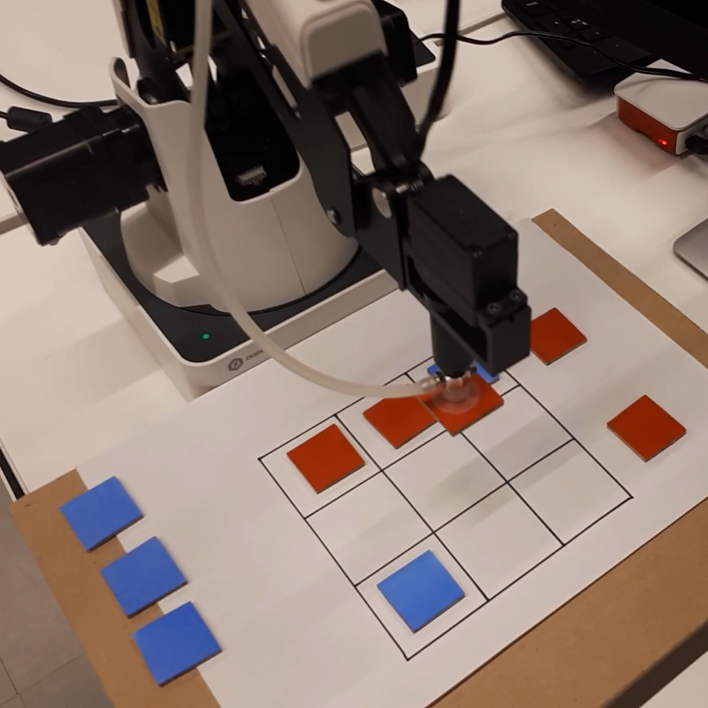
I worked as part of a team to program a robot arm to play Tic Tac Toe against a person.
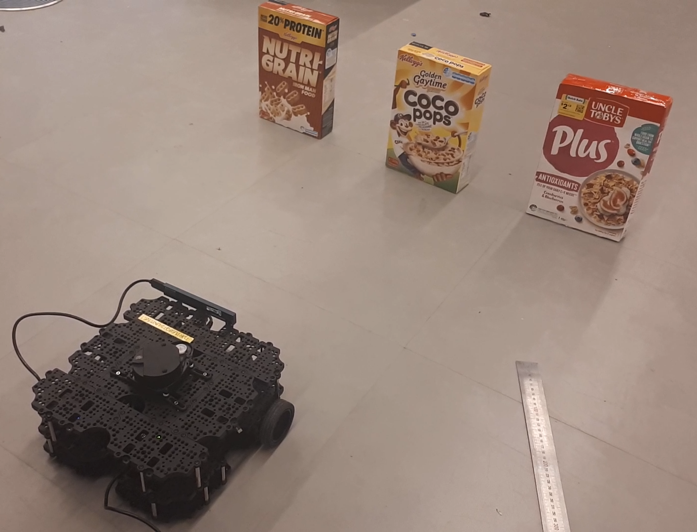
I led a team to program a TurtleBot to recognise cereal boxes and drive to the chosen box.
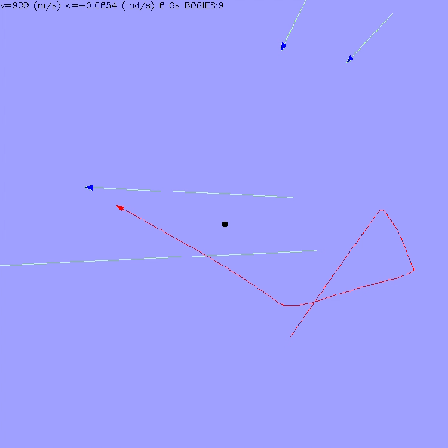
Using C++ with ROS, I programmed a simulated aircraft to predict the trajectory of enemy aircraft and intercept them.
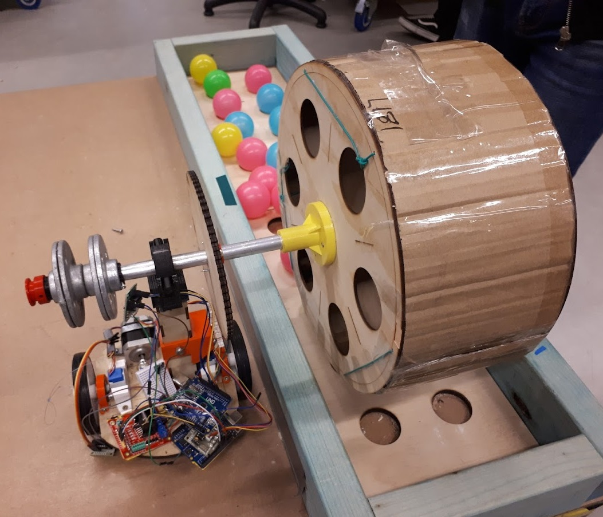
I worked as part of a team to design and build a robot to participate in the 2019 Warman Design and Build Competition.
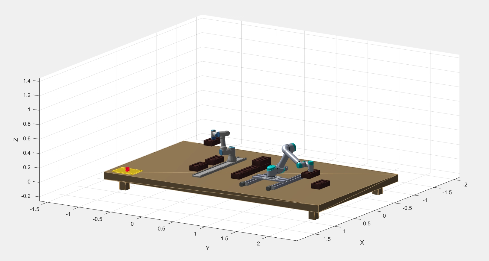
I programmed two simulated robot arms to work together to build a wall using Peter Corke's Robotics Toolbox in MATLAB.
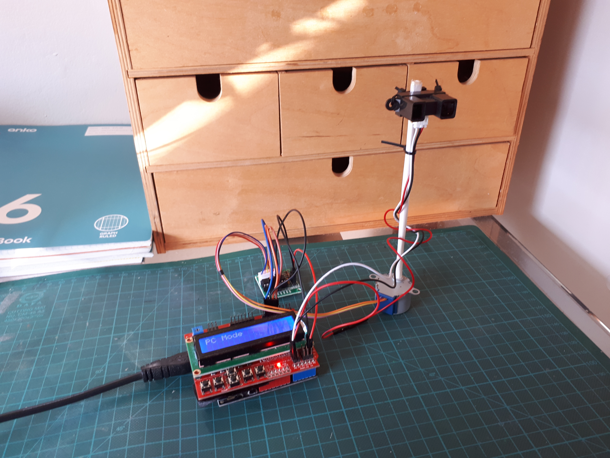
Using a distance sensor, a stepper motor and an Arduino, I programmed a security system to map the room and detect any changes.
During my current engineering internship as a Technology Consulting Intern at Isle Utilities, and my previous internship as a Research and Development Intern at Jenkins Engineering Defence Systems, I've had the opportunity to work on these projects.
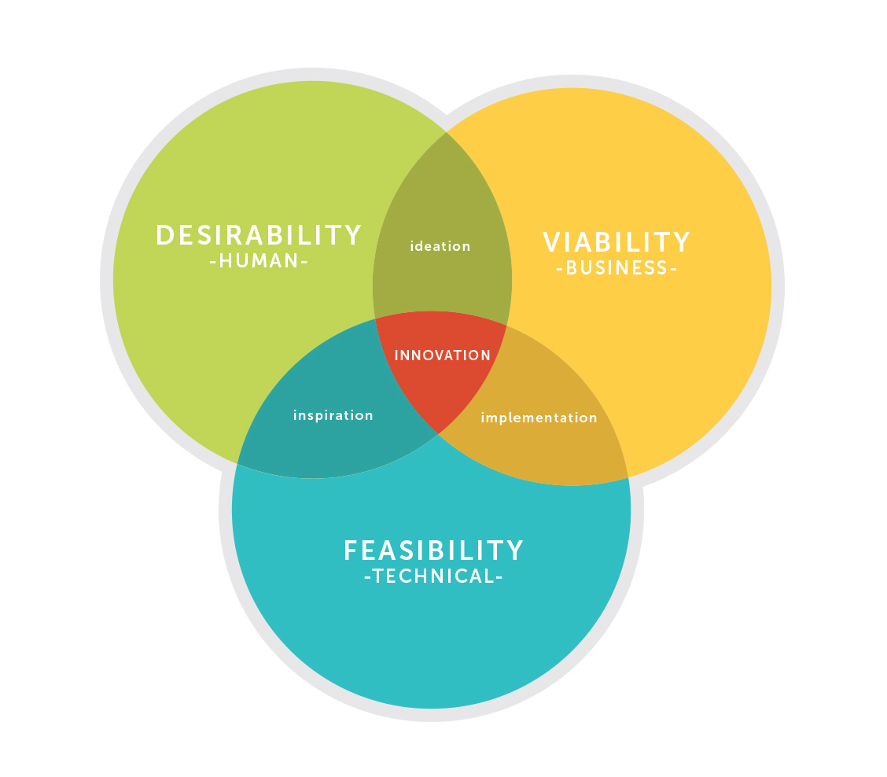
While working at Isle Utilities, I have taken part in technology scans in a diverse range of areas including water efficiency, sludge treatment, smart irrigation, and resource recovery.
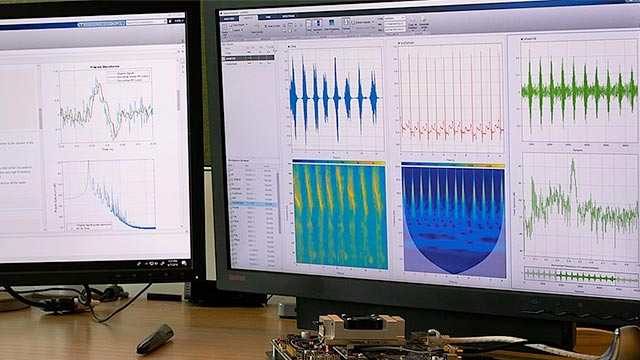
While working at Jenkins Engineering Defence Systems, I developed MATLAB GUI apps to analyse radio signals, and generate custom signals to transmit by interfacing with software defined radios.
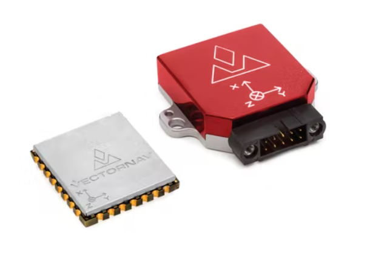
In my work at Jenkins Engineering Defence Systems, I designed a system to autonomously record sensor data from an IMU to a single board computer using C++.
As part of my degree I am undertaking a capstone project, which is a major engineering project that I am planning and executing independently, under the guidance of an academic supervisor. The project I am working on is to research and develop an improved control system for an exoskeleton arm, which consists of two parts: the inverse kinematics and the admittance controller.
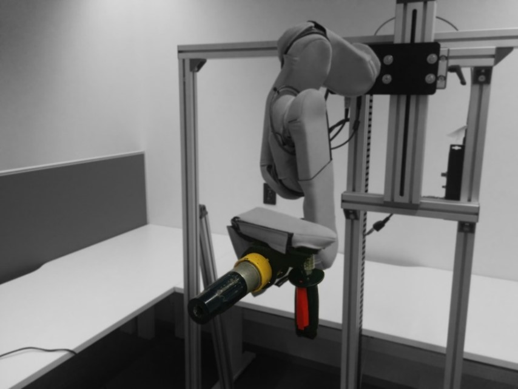
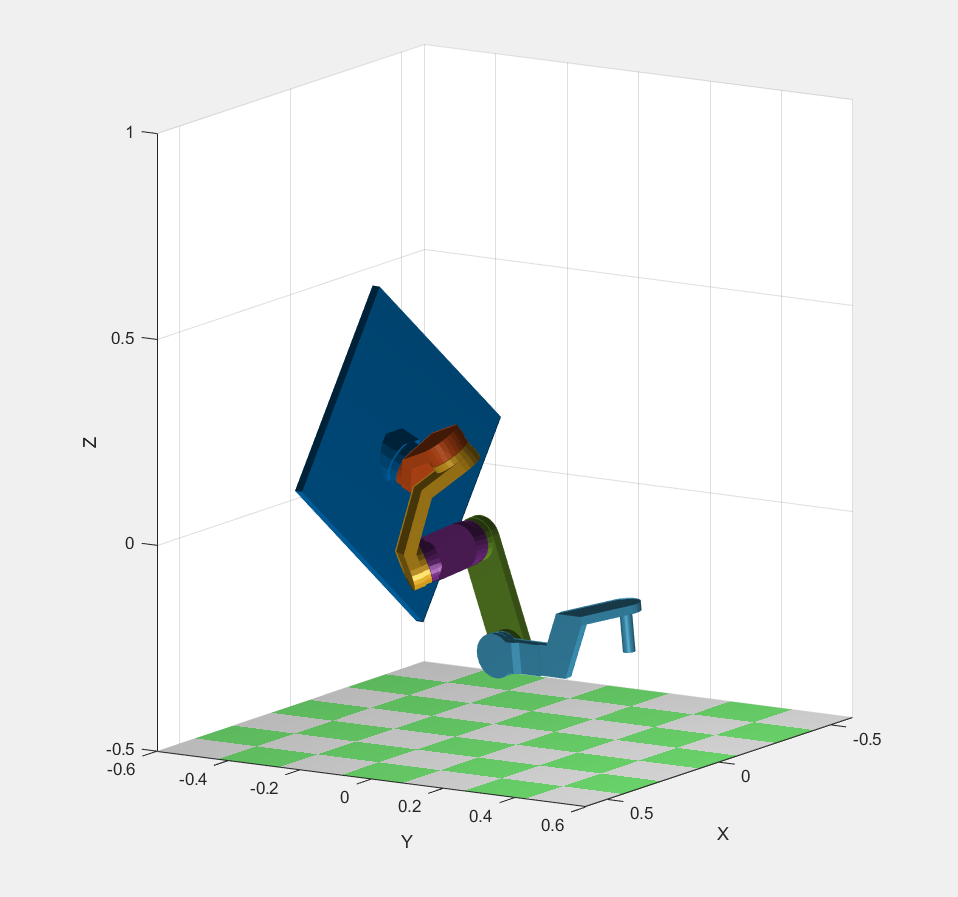
I have also set up a kinematic model of the robot in MATLAB, to enable fast testing of potential solutions in simulation before I implement then in C++ with ROS.
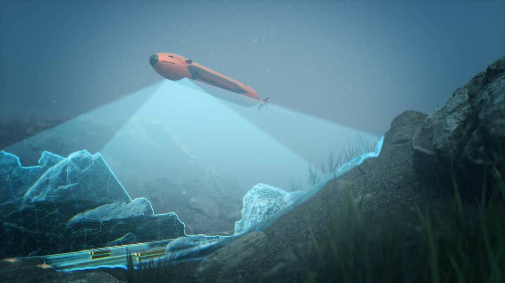
For the major project in Mechanical and Mechatronic Design, my team had the opportunity to work with Thales researching underwater robot communication and localisation. Delivery of this project was a great success, and proved to be a significant learning experience for what makes an effective team.
The key factors I learned that contributed to the success of the team were:
To contact me, please email me at luke.b.eyles@gmail.com, or connect with me on LinkedIn at linkedin.com/in/luke-eyles.